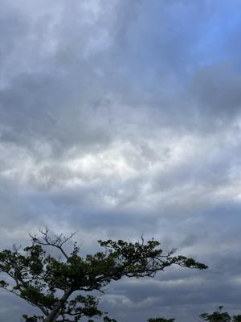

うるがいの話 ある日
最新: 共産主義とは【うるがいの話 ある日】とは 一日だけのプログです
『うるがいの話』の最新一日だけのプログで、通信料が少なく経済的だ。カニの画像をクリックすると全ての日付が載る『うるがいの話』サイトを表示します
|
|
【うるがいの話】 うるがい(ｳﾙｶﾞｲ urugai)とは、『もずくがに』の名前でとても大きくなります。 |
|---|---|
|
|
【カミマヤーの話】 猫のことを方言でマヤーといいます。カミマヤー（kamimayaa）とは、神の猫のことです。 |
|
【たながぁの音楽】 たながぁ（ﾀﾅｶﾞｰ tanagaa）とは手長えびのことで、何種類かあり大きいのは車 エビぐらいになります。 |

|
【ぶながぁの話】 ぶながぁ(ﾌﾞﾅｶﾞｰ bunagaa)とは、赤い髪の毛、赤い身体、そして身長は１ｍ２０ｃｍ ぐらい、川の蟹を食べているの目撃された。場所は沖縄県国頭郡大宜味村のと ある村僕の隣近所に住んでいる爺さんから、聞いた話です。 |
|
|
【ギーマの話】 ギーマ(giima)とは、山原の里山に咲くスズランに似た、 花を付けます。実は食べられます、 気が付くと口の周りが紫になっています。 |
2023年12月22日 (金）共産主義とは
15:21

映画『トランボ ハリウッドに最も嫌われた男』を見た。主人公と娘の会話。
（娘）パパは共産主義者なの？
（娘）私は？
（ダルトン）どうかな テストしてみよう
（ダルトン）好物の弁当は？
（娘）ハムサンド
（ダルトン）それを学校に持っていた日に弁当のない子がいたら？
（娘）分ける。
（ダルトン）分ける？働きに行けと言わないのか？
（娘）言わない。
（ダルトン）金を貸すのか。利息６％で。知らんぷりするのか？
（娘）違うよ。
（娘）おやおやちびっ子共産主義者だな。
社会人一年生のとき、京都にある寮の一部屋で同じ新人が、酒を飲みながらの
会話である
営業職Ａ君）ステーキが一皿しかないとき、家族皆で分け合うか？
営業職Ｂ君）家族皆で分け合う
営業職Ａ君）ステーキは稼いでいる父親が食べる。子供には自分で稼いでから
食べろと言うと、親から教わった。
私）・・・・分け合うのが当然だと思っていた私、啞然とする
映画の内容は、「ローマの休日」はじめ数々の名作の脚本を執筆したダルトン
・トランボを主人公に、東西冷戦の時代、ハリウッドに吹き荒れた“赤狩り”
を描く実話をもとにした社会派ドラマ。
１５時１２分 ビットコインの総資産 ￥１８、２２６（↑１９４）